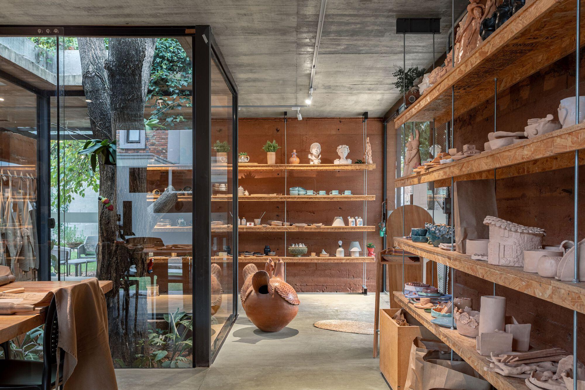
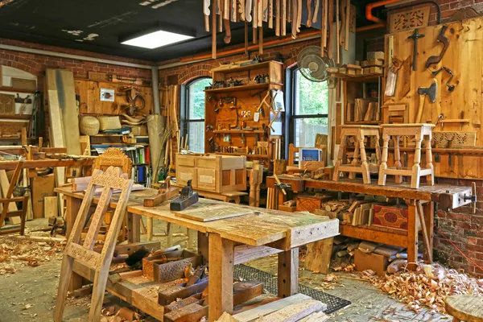
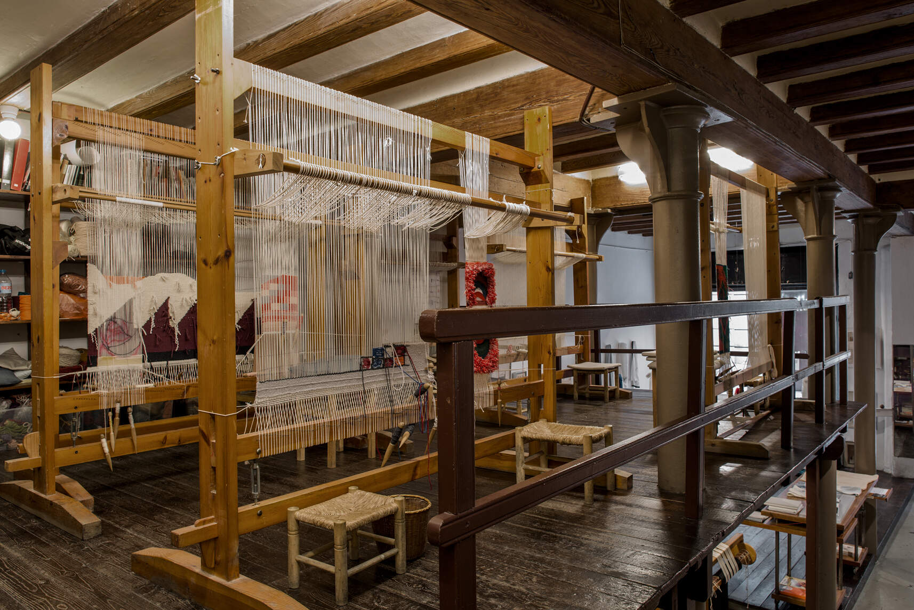
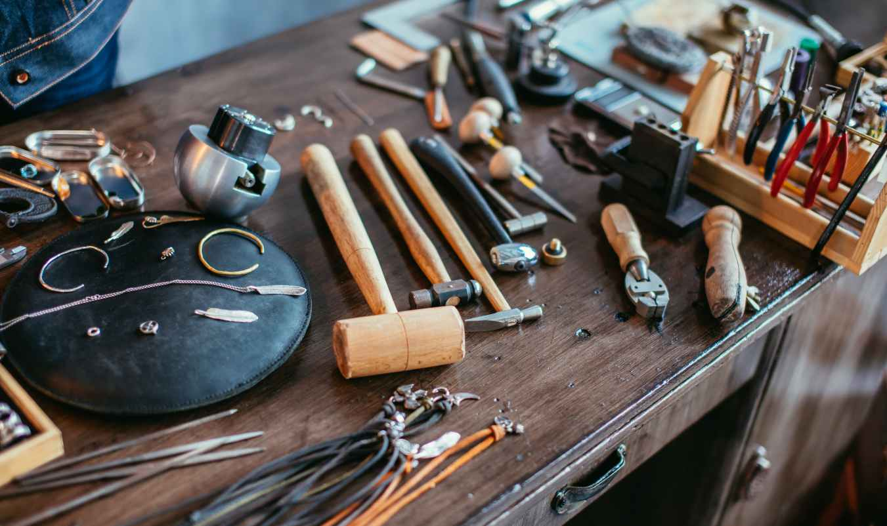
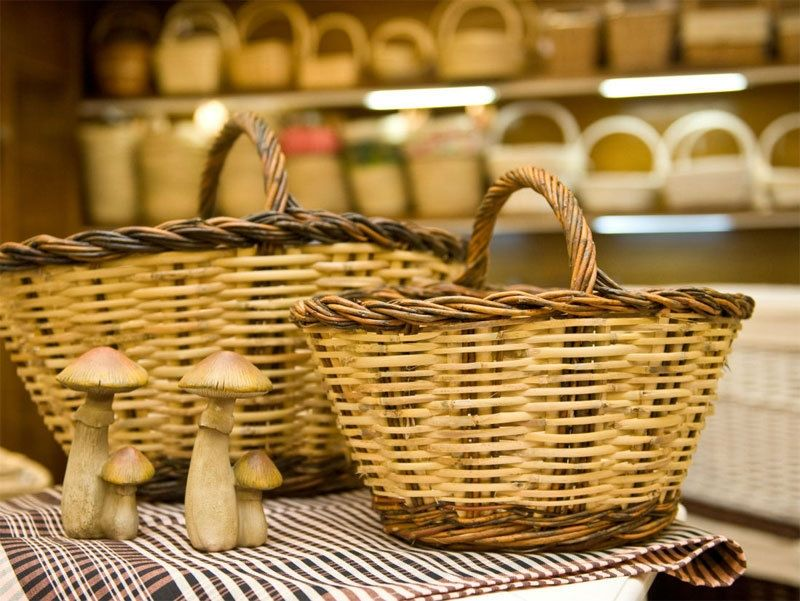

10:00 – 10:30
Acte inaugural
Comissió Organitzadora
Acte14, 15 i 16 de novembre de 2026
10:00 – 10:30
Comissió Organitzadora
Acte11:00 – 12:30
Maria Puig i Ferrer
Xerrada16:00 – 19:00
Maria Puig i Ferrer
Taller10:00 – 11:30
Joan Vidal Martínez
Xerrada12:00 – 13:00
Anna Ros Guillem
Xerrada15:00 – 18:00
Anna Ros Guillem
Taller10:00 – 11:30
Pere Camins Roca
Xerrada12:00 – 14:00
Tots els participants
Exposició18:00 – 18:30
Comissió Organitzadora
Acte



